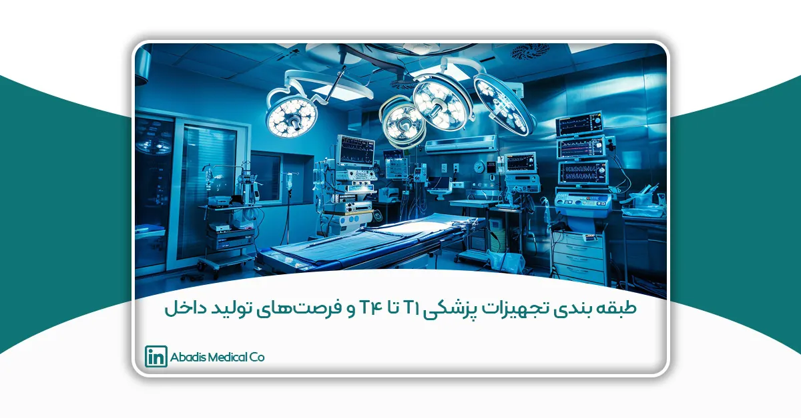
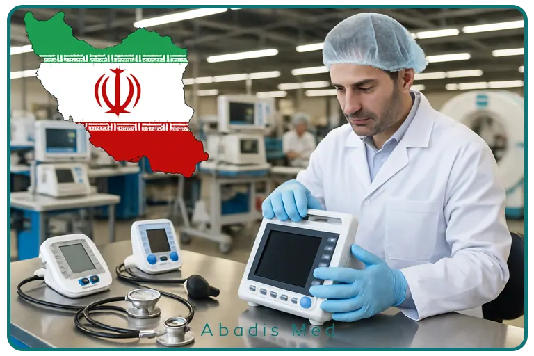

چکیده
با توجه به اهمیت روزافزون تجهیزات پزشکی در نظام سلامت و چالشهای واردات ناشی از تحریمها و نوسانات ارزی، بومیسازی تولید تجهیزات پزشکی به یک ضرورت راهبردی تبدیل شده است. طبقهبندی تجهیزات پزشکی به سطوح T1 تا T4، چارچوبی برای سیاستگذاری و حمایت از تولیدکنندگان داخلی فراهم کرده که هر سطح دارای ویژگیها، فرصتها و چالشهای خاص خود است. این مقاله به بررسی دقیق سیاستهای حمایتی موجود، فرصتهای سرمایهگذاری، موانع و راهکارهای توسعه تولید داخلی تجهیزات پزشکی در ایران میپردازد.
مقدمه
تجهیزات پزشکی از جمله کالاهای حیاتی در ارائه خدمات بهداشتی و درمانی هستند که نقش مستقیم در حفظ و ارتقای سلامت جامعه دارند. وابستگی کشور به واردات این تجهیزات، به ویژه در شرایط تحریم و نوسانات ارزی، مشکلات فراوانی به همراه داشته است. علاوه بر هزینههای بالای واردات، وابستگی به فناوری خارجی میتواند منجر به تاخیر در تامین و کاهش کیفیت خدمات شود. در این شرایط، تولید داخل تجهیزات پزشکی نه تنها از منظر اقتصادی بلکه از نظر امنیت ملی و سلامت عمومی اهمیت فراوان دارد.
یکی از راهکارهای موثر در مدیریت این موضوع، طبقهبندی تجهیزات پزشکی به سطوح مختلف است تا با شناخت توانمندیها و نیازهای هر سطح، سیاستهای حمایتی دقیقتری تدوین شود. طبقهبندی T1 تا T4، از تجهیزات ساده و پایه تا دستگاههای پیچیده و فناوریمحور را شامل میشود.
طبقهبندی تجهیزات پزشکی T1 تا T4
- سطح T1: تجهیزات ساده و پرمصرف که فناوری ساخت آنها در سطح ابتدایی است و اغلب مواد اولیه و فناوری آن در داخل کشور قابل تامین است. نمونههایی از این تجهیزات شامل سرنگها، دستکشهای پزشکی، بانداژها و فشارسنجهای مکانیکی هستند. تولید این تجهیزات اغلب توسط شرکتهای کوچک و متوسط قابل انجام است و بازار داخلی به شدت نیازمند آنهاست.
- سطح T2: تجهیزات نیمهپیشرفته که علاوه بر نیاز به مواد اولیه خاص، مستلزم مونتاژ دقیق و قطعات وارداتی هستند. تجهیزات نظارتی مانند دستگاههای مانیتورینگ علائم حیاتی و برخی ابزارهای جراحی در این دسته قرار میگیرند. در این سطح، همکاری با شرکتهای خارجی برای تامین قطعات و فناوری اهمیت دارد.
- سطح T3: تجهیزات پیشرفته که توسعه آنها نیازمند سرمایهگذاری قابل توجه در حوزه تحقیق و توسعه (R&D)، نیروی انسانی متخصص و زیرساختهای آزمایشگاهی است. تجهیزات تصویربرداری پرتابل، یونیتهای دندانپزشکی دیجیتال و برخی دستگاههای آزمایشگاهی در این دسته هستند. توانمندسازی شرکتهای ایرانی در این سطح، نشاندهنده پیشرفت فناوری در کشور است.
- سطح T4: تجهیزات بسیار پیچیده و فناوریمحور که توسعه آنها نیازمند زیرساختهای پیشرفته، دانش تخصصی بالا و سرمایهگذاریهای کلان است. نمونههایی مانند دستگاههای MRI، CT اسکن و رباتهای جراحی هوشمند در این طبقه قرار میگیرند. تولید این تجهیزات در داخل کشور هنوز محدود است اما با حمایتهای هدفمند و سرمایهگذاری میتوان به پیشرفت چشمگیر دست یافت.

سیاستهای حمایتی از تولید داخل
دولت ایران در سالهای اخیر با اعمال سیاستهای مختلف تلاش کرده است تا تولید داخل تجهیزات پزشکی را تقویت کند. این سیاستها شامل موارد زیر است:
-
تعرفههای گمرکی و محدودیت واردات: یکی از ابزارهای مهم حمایت، اعمال تعرفههای سنگین بر تجهیزات پزشکی سطح T1 و T2 است تا واردات آنها محدود شود و تولید داخل تشویق گردد. در برخی موارد، واردات تجهیزات معادل داخلی آن ممنوع شده است که باعث افزایش تقاضا برای محصولات داخلی شده است.
-
تسهیلات مالی و اعتباری: اعطای وامهای کمبهره، معافیتهای مالیاتی و حمایت از هزینههای تحقیق و توسعه برای شرکتهای تولیدکننده تجهیزات پزشکی، به ویژه در سطوح T2 و T3. این تسهیلات امکان سرمایهگذاری در فناوری و توسعه محصول را افزایش داده است.
-
حمایت از صادرات: دولت با ارائه مشوقهای صادراتی، شرکتهای تولیدکننده را به حضور در بازارهای منطقه و بینالمللی ترغیب میکند که این موضوع علاوه بر افزایش درآمد، موجب افزایش کیفیت و رقابتپذیری محصولات میشود.
-
تضمین خرید از تولیدکنندگان داخلی: مراکز درمانی دولتی ملزم به خرید بخشی از تجهیزات پزشکی مورد نیاز خود از شرکتهای تولیدکننده داخلی شدهاند که این سیاست بازار داخلی را پایدار میکند.
-
ارتباط دانشگاه و صنعت: ایجاد پارکهای علم و فناوری، صندوقهای سرمایهگذاری خطرپذیر و همکاریهای پژوهشی میان دانشگاهها و شرکتها، زیرساختهای لازم برای توسعه فناوریهای پیشرفته در سطح T3 و T4 را فراهم کرده است.
فرصتهای سرمایهگذاری و رشد بازار
بازار تجهیزات پزشکی ایران با توجه به جمعیت بیش از ۸۰ میلیون نفری و توسعه نظام سلامت، پتانسیل بالایی برای رشد تولید داخلی دارد. عوامل زیر فرصتهای طلایی در این حوزه را نشان میدهد:
-
افزایش جمعیت سالمندی و نیاز بیشتر به تجهیزات مراقبتی.
-
رشد خدمات بهداشتی و درمانی در مناطق کمتر توسعهیافته.
-
تغییرات فناورانه و ایجاد تجهیزات جدید که امکان تولید آنها در داخل وجود دارد.
-
ظرفیت صادرات به کشورهای همسایه با تقاضای مشابه و کمبود تولیدکننده.
شرکتهایی مانند «مخازن طبی آبادیس» که در زمینه تولید تجهیزات تخصصی فعالیت دارند، میتوانند با تکیه بر این سیاستها و فرصتها جایگاه خود را تقویت کرده و بازارهای جدیدی را فتح کنند.
چالشها و موانع موجود
با وجود فرصتها، تولید داخل تجهیزات پزشکی با موانع و مشکلاتی نیز روبرو است که باید به آنها توجه شود:
- محدودیت منابع مالی و عدم دسترسی کافی به سرمایهگذارانی که بتوانند پروژههای بلندمدت فناوریمحور را حمایت کنند.
- نبود هماهنگی و همسویی کامل بین وزارتخانهها، سازمانهای استاندارد و نهادهای تحقیقاتی که منجر به کندی فرآیندهای تایید و مجوزدهی میشود.
- کمبود نیروی انسانی متخصص و آموزشدیده در حوزه مهندسی پزشکی و فناوریهای نوین.
- دشواریهای مربوط به کسب استانداردهای بینالمللی و تاییدیههای لازم برای صادرات.
- مشکلات زنجیره تامین قطعات و مواد اولیه که در برخی موارد وابستگی به خارج از کشور را افزایش میدهد.
راهکارهای پیشنهادی برای توسعه پایدار
برای بهرهبرداری کامل از فرصتهای تولید داخل و رفع موانع، اقدامات زیر ضروری است:
-
افزایش سرمایهگذاری در بخش تحقیق و توسعه و ایجاد تسهیلات مالی هدفمند.
-
تقویت همکاری بین دانشگاهها، مراکز تحقیقاتی و صنعت با ایجاد پروژههای مشترک و توسعه فناوری.
-
بهبود نظام آموزش تخصصی در حوزه مهندسی پزشکی و فناوریهای نوین.
-
تسهیل فرآیندهای اخذ استاندارد و مجوزهای لازم با همکاری نهادهای مرتبط.
-
توسعه زیرساختهای تامین قطعات و مواد اولیه در داخل کشور.
نتیجهگیری
صنعت تولید تجهیزات پزشکی در ایران با وجود چالشها، فرصتهای بسیاری دارد که با بهرهگیری از سیاستهای حمایتی و سرمایهگذاری صحیح میتوان به جایگاه قابل توجهی در بازارهای داخلی و منطقهای دست یافت. طبقهبندی تجهیزات پزشکی از T1 تا T4 کمک میکند تا توسعه فناوری و تولید به صورت مرحلهای و هدفمند پیش رود. حمایت مستمر دولت، تقویت پژوهش و توسعه و افزایش همکاریهای بینبخشی از عوامل کلیدی در مسیر خودکفایی و رقابتپذیری این صنعت است.
منابع
-
وزارت بهداشت، درمان و آموزش پزشکی جمهوری اسلامی ایران
«سند ملی راهبردی توسعه تجهیزات پزشکی»، معاونت علمی و فناوری ریاست جمهوری، ۱۴۰۰.
-
اداره کل تجهیزات پزشکی ایران (IMED)
گزارش عملکرد حوزه حمایت از تولید داخل، ۱۳۹۹ تا ۱۴۰۲.
-
معاونت علمی و فناوری ریاست جمهوری
گزارش توسعه فناوری در حوزه تجهیزات پزشکی، ۱۴۰۱.
-
دفتر توسعه صنایع پیشرفته، وزارت صنعت، معدن و تجارت
-
برنامه حمایت از شرکتهای تولیدکننده تجهیزات پزشکی، ۱۴۰۲.
-
- موسسه مطالعات و پژوهشهای بازرگانی
- تحلیل زنجیره ارزش تجهیزات پزشکی در ایران، ۱۴۰۰.
- http://www.mporc.ir
-
موسسه مطالعات بینالمللی انرژی و اقتصاد سلامت
«تحلیل اثرات تحریم بر واردات تجهیزات پزشکی و راهکارهای جایگزینی تولید داخلی»، ۱۳۹۸.
-
سازمان جهانی بهداشت (WHO)
- Local Production and Technology Transfer of Medical Devices, WHO Report, 2020.
- https://www.who.int/publications